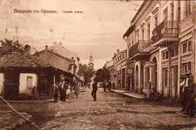
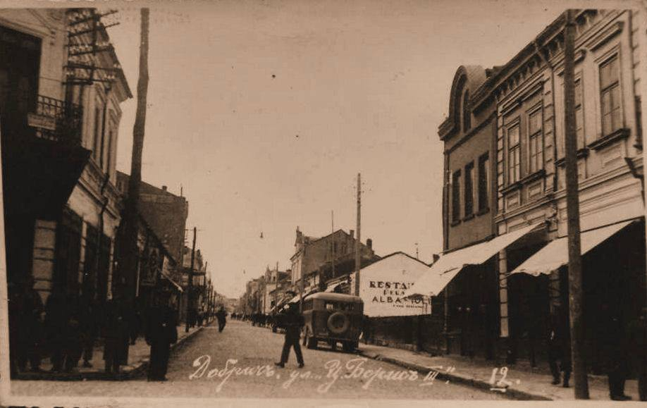

В централната част на града се простира Часовниковата кула. Тя е висока 30 метра и е построена от
Вуно Марков през 1866 година.улата е построена като част от мащабно строителство през 1866 г. по повод обявяването
на село Самунджиево за град и околийски център по предложение на Мидхад паша от врачежанския
майстор Вуно Марков.
История
Кулата е построена като част от мащабно строителство през 1866 г. по повод обявяването
на село Самунджиево за град и околийски център по предложение на Мидхад паша от врачежанския
майстор Вуно Марков. Часовниковият механизъм е направен от местния железар Генчо Наков, а
камбаната – от банския майстор Лазар Димитров.
Първоначално на върха на кулата имало дървена къщичка, от която на всеки кръгъл час излизал
турчин с фес, който се покланял докато камбаната отброявала часа. След Освобождението местните
хора свалят и изгарят турския символ.[1]
През 1924 г. до кулата е пристроено читалище. След половин век, при реставрация на кулата,
читалището е премахнато, а до кулата е засадена дугласка ела. Дръвчето израства през годините
докато на височина почти достига кулата. То става едно от любимите дървета на ботевградчани и
години наред бива украсявано за коледните и новогодишни празници. Порасналото дърво обаче е
твърде близо до кулата, и по оценка на лесовъда Йордан Кюрпанов – корените му застрашават
символа на града. Дървото е отсечено, а в другия край на площада са засадени три нови дървета.
В своята вековна история, архитектурният паметник на културата е претърпял строително-ремонтни,
консервационно-реставрационни и художествени дейности, за да запази възрожденския си стил и вид.
Часовниковата кула е сред 100-те Национални туристически обекти. Печатът за този обект се намира
в Историческия музей.


Архитектура
Височината ѝ е 30 метра, което я прави най-високата часовникова кула в България.[2]
Отличителни
белези са нейните барокови елементи и стенописите, украсяващи вълнообразните корнизи. Тя
съдържа
аналогични архитектурни елементи с тези на пловдивските и копривщенските къщи и заострено
кубе,
което напомня формите на мохамеданската архитектура. Украсена е със сини фрески. Долната
част на
кулата е каменна зидария с вратичка, през която се влиза вътре за обслужване и навиване на
часовниковия механизъм. Следват вълнообразна и най-отгоре – шестоъгълна надстройки с
намаляващи
диаметри. За изграждането ѝ са използвани едри ломени камъни от кариерата при село
Боженица и дървен материал от района на село Врачеш. Състои се от три пропорционални части
с обща височина от 30 метра. В основата си е квадрат с височина 11 метра, издигнат от ломен
камък. Следващият пояс е стеснен и ръбовете му са очертани от полуколони, завършващи с
корниз,
а стените имат леко вълнообразна форма, която заедно с корниза придава изящност на
постройката.
Горната част се издига над корниза и се стеснява още повече. Тя има шестоъгълна форма и в
нея
е монтиран часовник с камбана. През 1870 г. е поставен ветропоказател.
От входа на кулата до последната ѝ част започва спираловидно направена дървена стълба, която
отвежда до часовниковия механизъм. Мелодичният камбанен звън се чува в радиус от 3 km.

.jpg)